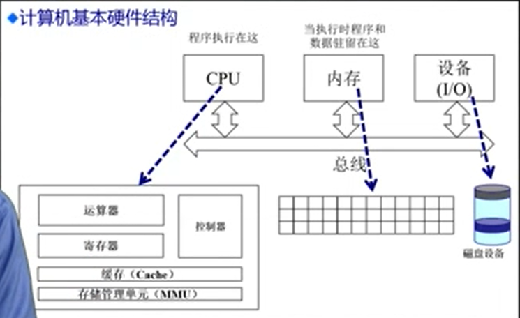

1、计算机体系结构/内存分层体系
1、1、计算机体系结构
计算机体系结构主要包含三部分：CPU，内存，外设

1、2、内存分层体系

寄存器和cache，速度很快，容量很小， 位于CPU芯片内部，操作系统对它们无法直接进行管理。
主存（物理内存）容量相对于寄存器和cache大得多，速度相对于寄存器和cache慢一些。
主存上的数据掉电就没了，永久保存需要将数据保存在硬盘上。
硬盘容量相比于其他，容量最大，速度最慢。
1、3在操作系统的内存管理范例

操作系统在内存管理上需要完成哪些事情？
1、抽象。我们希望应用程序在内存中运行的时候，由于操作系统是有效管理，使得应用程序在运行的时候不需要去考虑底层的细节，不用考虑物理内存在什么地方，不用考虑外设在什么地方，只需要访问一个连续的地址空间，我们把这个空间称为逻辑地址空间。
2、保护。因为在内存中可以运行多个应用程序，一个应用进程在运行的过程中有可能会去访问另一个进程的地址空间，这有可能破坏另一个进程的地址空间。我们需要一种有效的机制去保护进程间的地址空间是需要隔离的，隔离这个机制的实现也是操作系统的任务。
3、共享。除了隔离之外，进程之间也可能会去进行交互，那怎末提供有效的共享空间使得进程之间可以安全可靠的进行数据的传递。
4、虚拟化。当我们在内存中存放了很多的应用程序之后，会出现内存不够的情况。怎末能够让正在需要运行的程序获得它所需要的内存空间？操作系统会把，最需要放在内存的数据放到内存中，那些暂时不需要去访问的数据，可以临时的放在硬盘上。
在操作系统中管理内存的不同方法：
1、程序重定位
2、分段
3、分页
4、虚拟内存
5、按需分页虚拟内存
实现高度依赖于硬件
1、必须知道内存架构
2、MMU（内存管理单元）：硬件组件负责处理CPU的内存访问请求
MMU在CPU中，是硬件设备
2、地址空间&地址生成
2、1、地址空间定义
地址空间分为两种，
物理地址空间，物理地址内存是和硬件直接对应的，比如内存条所代表的主存，硬盘所代表的物理地址。物理内存的控制个管理是通过硬件来完成的。
逻辑地址空间，一个运行的程序所看到的内存空间，相对而言，它看到的地址空间比较简单，它是一个一维的线性的地址空间。

逻辑地址到物理地址之间的映射关系是通过操作系统有效的进行管理的。
2、2、地址生成
逻辑地址生成，

上图是一个c程序，c程序的函数的位置，变量的名字，就是一种逻辑地址，不过是一种人更容易理解的逻辑地址。汇编程序相对于C语言更加贴近于机器语言，更便于机器去理解，但是它依旧是用符号表示变量和函数名，汇编语言通过汇编器可以转化为机器语言。
c程序通过编译生成了汇编程序，汇编程序通过汇编器转化机器语言（.o程序），.o程序的起始地址都是从0开始的，它会把汇编程序中函数名和变量名转化为相应的地址，该地址是一个相对从0开始的连续地址空间，这是一种逻辑地址 ，linker可以把多个.o程序变成一个单一的执行程序，比如 .exe file。这时的.exe文件是可以在内存中执行，但是还存放在硬盘中的程序。还需要一个应用程序loader，将放在硬盘中的可执行文件放到内存中去运行。（注意，该程序加载到内存中，此时程序中的地址依旧是逻辑地址）

当CPU执行到某一条指令的时候，CPU的ALU部件会需要这条指令的内容，CPU会发出请求，请求的参数就是该指令的逻辑地址，CPU中的MMU会去查找逻辑地址的映射表，若是存在该逻辑地址所映射的物理地址，就找到了该指令的物理地址。若是MMU中没有该映射关系，则会去内存中找，内存中的map。如果找到了，CPU中的控制器，会给主存发出一个请求，类似于（我需要某一个物理地址的内容）,主存就会将该物理地址的内容通过总线传递给CPU，CPU就可以执行该指令了。
在程序执行之前，操作系统会将逻辑地址到物理地址的映射关系建好，这个关系可以放到内存中，由cpu进行缓存，从而可以加快访问的过程。····
2、3、地址安全检查
操作系统需要保证放到内存中的程序相互之间不能够相互干扰，为此需要确保每一个程序所访问的地址空间是合法的，或者说是限制在它的约束范围之内的，

如上图，程序的逻辑地址空间包含两部分，第一部分是起始地址，第二部分是长度。当cpu执行程序中的某条指令的时候，cpu会去查找这个map，这个map会指出来该访问的逻辑地址是否满足区域的限制，若满足，就可以根据映射关系正常的找到该指令的物理地址，将指令和数据读取到CPU，若不满足，cpu就会产生一个内存访问异常，由操作系统完成进一步的处理。
3、连续内存分配
3、1、内存碎片问题

3、2、分区的动态分配

3、2、1、第一适配

实现第一适配算法的需求：
1、按地址排序的空闲块列表
2、分配需要寻找一个合适的分区
3、重分配需要检查，看是否自由分区能合并于相邻的空闲分区（若有）
第一适配算法的优势：
1、简单
2、易于产生更大空闲块，向着地址空间的结尾
第一适配算法的劣势：
1、会产生外部碎片
2、不确定性
3、2、2、最佳适配

基本原理&实现
1、为了避免分割大空闲块
2、为了最小化外部碎片产生的尺寸
需求：
1、按尺寸排列的空闲块列表
2、分配需要寻找一个合适的分区
3、重分配需要搜索及合并于相邻的空闲分区（若有）
最优适配算法的优势：
1、当大部分分配是小尺寸时非常有效
2、比较简单
最优适配算法的劣势：
1、外部碎片
2、重分配慢
3、易产生很多没用的微小碎片
3、2、3、最差适配

基本原理&实现
1、为了避免有太多微小的碎片
需求：
1、按尺寸排列的空闲块列表
2、分配很快（获得最大的分区）
3、重分配需要合并于相邻的空闲分区，若有，然后调整空闲块列表
优势
1、假如分配是中等尺寸效果最好
劣势
1、重分配慢
2、外部碎片
3、易于破碎大的空闲块以致大分区无法被分配
3、3、压缩式碎片整理


何时重置？
程序在内存中等待执行时可以重置，已经执行的程序不能进行重置。
开销？
单凭软件进行内存的频繁重置操作，开销很大。
3、4、交换式碎片整理

在p3程序执行的时候，需要更多的内存空间，可以将等待的程序放入硬盘，将硬盘当成虚拟内存。然后p3程序执行，等到需要硬盘中的程序执行的时候，p3可能执行完毕了，或者说p3不需要这模多的内存空间了。此时将需要执行的内存从硬盘中提取到内存中等待执行。
问题：
1、哪些程序需要交换？
4、非连续内存分配
连续内存分配的缺点：
1、分配给一个程序的物理内存是连续的
2、内存利用率较低
3、有内碎片、外碎片问题
非连续分配的优点：
1、一个程序的物理地址空间是非连续的
2、更好的内存利用和管理
3、允许共享代码与数据（共享库等）
4、支持动态加载和动态链接
非连续分配：缺点
1、如何建立虚拟地址和物理地址之间的转换
1、软件方案
开销较大
2、硬件方案
2、两种硬件方案
2、1、分段
2、2、分页
4、1、分段
4、1、1、程序的分段地址空间

程序，其实也是由各种各样的段组成的，比如，
代码的分段：主程序，子程序，共享的一些库。
数据的分段：栈段，堆段，共享数据段。
分段：更好的分离和共享

上图，左侧是连续的逻辑地址，右侧是不连续的物理地址，那么就需要一种映射关系，关联连续的逻辑地址和不连续的物理地址

可以把左边运行的执行程序运行的逻辑地址空间看成一个连续的一维的线性数组，一个大的连续的字节流，通过段机制的映射关系，可以把不同的内存块，比如，代码，栈，堆，分别映射到不同的内存中的段中。
4、1、2、分段寻址方案


段表里有两个重要信息，一个是段的起始地址，另一个是段的长度的限制。
段表由操作系统在正式的寻址之前建立好。
4、2、分页
现在的绝大部分CPU主要采取分页机制。

分段和分页最大的区别：
分段机制里面，段的尺寸是可变的；
在分页机制里，页（页帧）的大小是固定的。 


4、3、页表
4、3、1、页表概述

页表主要是实现 逻辑的页号到物理的帧号的转化。bit （标志位）可以表示对应的物理页是否存在。还有表示 该页是否读过等等。

如图，页号的第二位为标志位，（4，0）对应的标志位为0，物理页不存在，（3，1023）对应的标志位为1，其对应的帧号为4。
分页机制的性能问题：

因为，每个运行的程序都有自己的一个页表，N个程序就需要N个页表。页表的信息空间较大，只能存放在内存中，因此访问一个内存单元需要2次内存访问。
4、3、2、转换后备缓冲区（TLB）（时间问题）

TLB位于MMU，若是TLB未命中，会去页表中找对应的页号，找到之后将页号存储到TLB中。
TLB的缺失情况不会很大，因为 比如是32位系统，一个页是4k，如果每一个地址都要访问的话，需要访问4k次才会引起TLB的缺失。
程序的局部性可以减少TLB的缺失。
TLB缺失后的更新操作根据CPU的不同可能不同，一类CPU（X86）完全由硬件完成，另一类CPU需要由操作系统来实现。
4、3、3、二级/多级 页表（空间问题）

标志位位0的页表项没必要存在，分级页表解决了这个问题。

多级页表机制，是以时间换空间，时间问题可以通过TLB机制缓解。
计算题：


4、3、4、反向页表


用物理页帧好查找逻辑页号。


解决通过页帧号查找页号方法一：（类似于TLB）


解决通过页帧号查找页号方法二：

在hashTable的key部分加入PID（进程ID）可以减少哈希碰撞；
还可以通过TLB机制，降低CPU多次访问内存造成的开销。

反向页表的实现：
从基于寄存器 到基于关联存储器，到基于hashTable的组织。
目前，反向页表在一些高端的CPU中才会使用，反向页表有很多好处：
1、不受制于逻辑地址空间的大小的限制，容量可以做到很小，因为它只和物理的地址空间有关。
2、对于单级页表或者多级页表，每一个运行的程序都需要有一个pageTable，而反向页表，整个系统只需要一个反向页表，因为它使用物理页帧的页帧号作为index。
缺点：实现较为困难：
1、需要高速的hash计算，高效的hash函数。
2、解决冲突的机制。
5、虚拟内存
5、1、虚拟内存的起因
程序规模的增长速度远远大于存储器容量的增长速度。

为了满足程序规模，人们可以会去增加内存容量。但是成本太大，


5、2、覆盖技术
5、3、交换技术
5、4、虚存技术
5、4、1、目标
5、4、2、程序局部性原理
5、4、3、基本概念
5、4、4、基本特征
5、4、5、虚拟页式内存管理